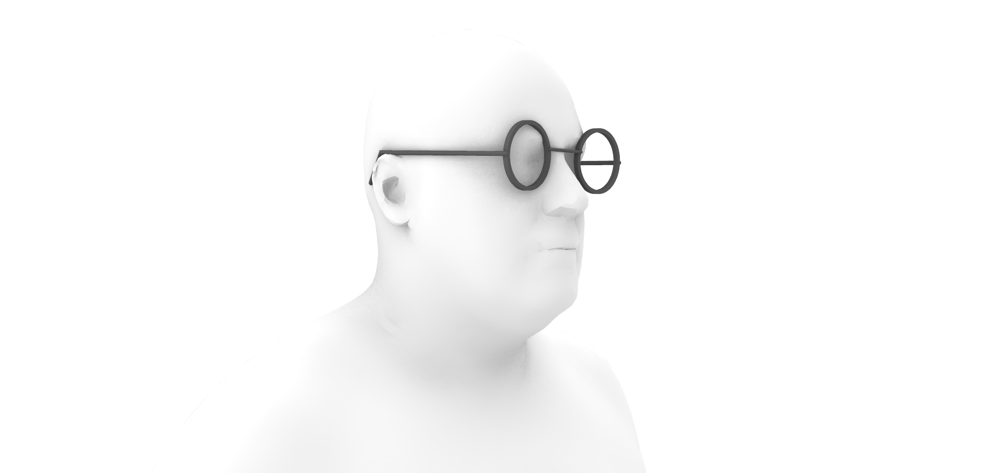
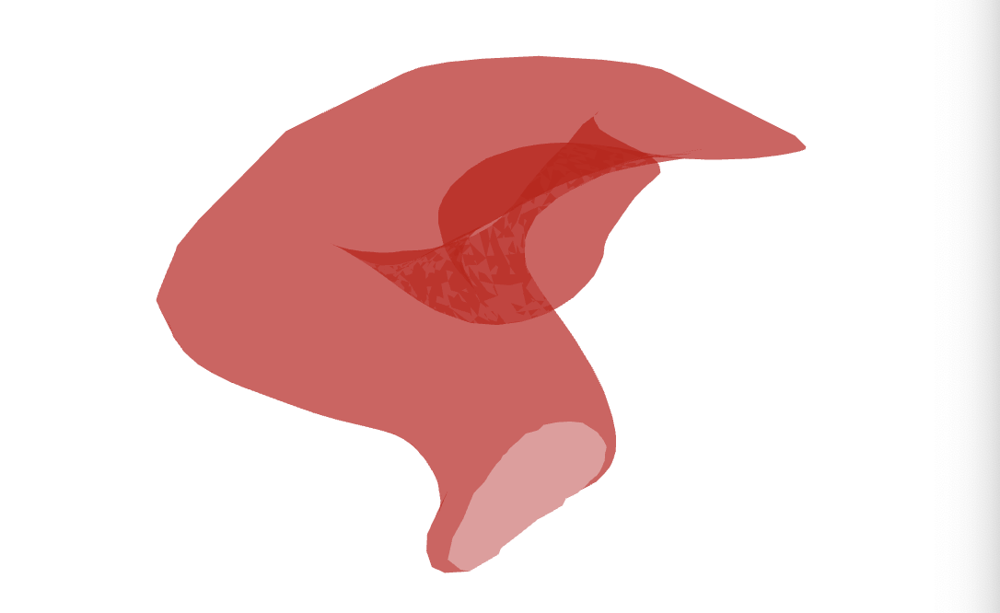
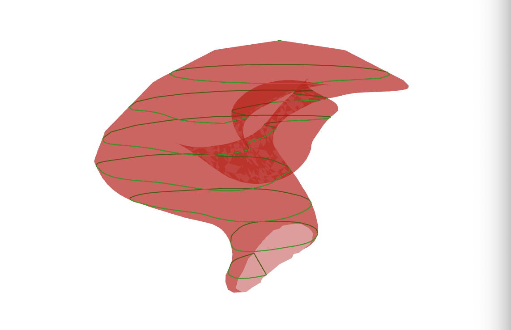
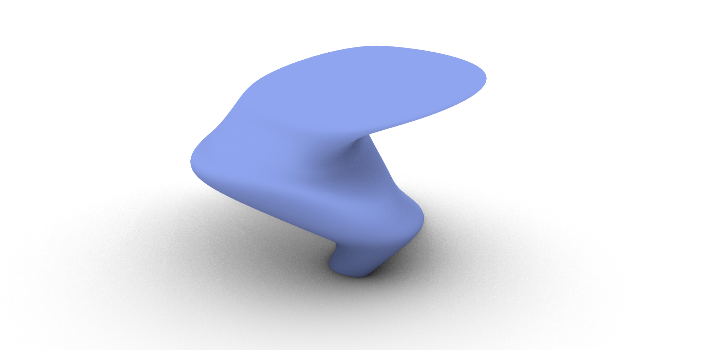

Design for Personalized Fit#
Authors: Your Name
Last Edited: 2023-07-15
Special thanks to Dr. Wolf Song and Dr. Toon Huysmans for their contribution in this lesson.
Introduction#
📑 What: Introduction to the field of personalized design and 3D scanning
For Whom: Intermediates in Rhino/Grasshopper
Time: 15 minutes
Personalized Design#
Personalized design is an innovative approach to creating unique and customized products that are tailored to meet individual needs ranging from functional requirements to aesthetics. There are three main types of personalized products:

Personalization in Identity: focuses on enhancing the perception of the product by giving the customer freedom of customization through unique form, texture, colour, print, smell, taste, sound, feel, etc.

Personalization in Capabilities: focuses on enhancing the functions of the product to increase performance through extra augmentations (electrical, mechanical, fluidic, and thermal components) to create added value to the product.

Personalization in Fit: focuses on the interaction between the product, consumer, and its environment. Characteristics of the product such as shape, size, mass, colour palette, and personalized interactions (e.g. comfort) are adjusted to meet the individual’s needs.
Personalization in Fit#
The following lesson will focus on Personalization in Fit. This design method relies on physical measurements of an object or body part to generate a custom fitted product to meet the users need. The Personalization in Fit can benefit the users by providing increased comfort and improved performance.
When developing a design for Personalized Fit in Rhino Grasshopper, the goal is to create a Rhino Surface that matches the geometry and dimensions of the body part/object. For more on information on Rhino Surfaces, please refer to Lesson 4 (Reference here). Once the Rhino Surface has been created, the surface can be modified depending on the needs of the user e.g. applying a data-driven algorithmic pattern on the surface to reduce pressure applied on the body. There are various approaches to developing a personalized fit using Rhino Grasshopper depending on the body part and the data input method used.
Collecting Anthropomorphic Data#
📑 What: Introduction to the field of personalized design and 3D scanning
For Whom: Intermediates in Rhino/Grasshopper
Time: 20 minutes
Overview of Collection Methods#
To begin designing a product personalized for fit, we first need to collect anthropomorphic data (data of the human body geometry) before we create the Grasshopper script to generate the Rhino geometry. Depending on the requirements of the design, there are various collection methods varying in accuracy and complexity. The decision on the collection method will also influence how the Grasshopper script will be set up as we will see in the following section.
The input methods we will discuss include:
Physical measurements
3D Scanning
Statistical Shape Modeling
3D scan database (DINED)
Physical Measurements#
Obtaining physical measurements is the simplest and quickest method to acquire data on human body parts, yet it might not be as accurate as other methods. To obtain physical measurements, the designer can use simple tools such as a caliper, or a custom rig to measure specific points along the body. You might already be familiar with some measurement rigs such as the foot measuring device to find your shoe size.

In the Master’s graduation project Development of a low-cost 3D foot scanner , graduation student Hoeksema, J. developed a rig to digitally measure specific points along a person’s foot as seen in the figure below.

3D Scanning#

Non-contact 3D scanning is the process of collecting data on a real world object through cameras, lasers, and other types of sensors. The outcome of this process is usually a 3D mesh model as seen in the figure below.
Depending on the accuracy of the 3D scanned used, the 3D mesh may require some post-processing to reduce the noise, artefacts, and missing data in the scanning process before it is ready for use inside of Grasshopper. The post-processing cleaning of the mesh can be done in a polygon modeling software such as Blender or Zbrush. In some cases, mesh correspondence can also be an option to improve the quality of the 3D scan. In mesh correspondence, a high quality 3D template is overlayed and deformed to match the geometry of the 3D scan as can be seen in the figure below. Mesh correspondence can be done using the software R3DS Wrap 3 .
Credits: Dr. Toon Huysmans
Statistical Shape Modeling#
Statistical Shape Modeling are used to describe a collection of similar 3D data in a simplified way. SSMs represent an average of the geometry of the 3D data including any variation. For example, if you have collected various 3D scanned data of ear geometry from a certain population, using SSM you could create an average 3D mesh model of your collected data. This approach can be useful when the goal of your design is for Personalized Fit of an individual, but Personalized Fit for a particular population. To explore the creation of SSM, refer to the software Paraview for more information.
Credits: Dr. Toon Huysmans
3D Scan Database (DINED)#
If your design project requires Personalization in Fit for a specific human population, online databases such as DINED are useful to quickly collect data and obtain quality 3D meshes for the human body. DINED is an anthropomorphic database with various data, including 3D data, of various human populations. With DINED, you are able to select from a variety of populations and measures, and download the 3D SSM mesh file as an STL to be used in Grasshopper.
Credits: Dr. Toon Huysmans
Additionally, there is a Grasshopper plugin for DINED developed at TU Delft - Industrial Design Engineering by Dr. Toon Huysmans. This plugin allows the user to directly select the population and import the 3D STL model directly from Grasshopper. More information on the DINED Grasshopper plugin can be found in the following resource: DINED Plugin
Generating Personalized Designs from Anthropomorphic Data#
Depending on your data collection method and the requirements of your design, you can use various methods to generate a Rhino Surface using Grasshopper. The first few methods presented to showcase how to generate a Rhino Surface using different input data and approaches. A Rhino Surface is often the starting point in your personalized design before adding further features. The final method showcases how a pre-existing design template can be customized using anthropomorphic data collected from users.
Generating a Surface from Physical Measurements#
In this scenario, the designer generates a surface from physical measurements taken of users’ anthropomorphic data, whether measured with simple tools like a caliper or a custom rig. For this, the designer creates a Grasshopper script with a template surface. The template surface is created from curves, from which the control points represent the locations at which the measurements are taken.
An example of this scenario can be seen in Development of a low-cost 3D foot scanner. In this graduation project, the student developed a custom contact 3D scanning rig to measure the feet of users. The measured location points are then inputted into a Grasshopper script that modifies the surface template to match the measured values.
{kind=link}
https://repository.tudelft.nl/islandora/object/uuid%3A0ee880fb-7063-42cd-aa82-b67f7c84d1e9
{kind=link}
https://repository.tudelft.nl/islandora/object/uuid%3A0ee880fb-7063-42cd-aa82-b67f7c84d1e9
Let’s consider how we can set up a Grasshopper script using a similar scenario to generate a surface of foot based on foot measurements. You can refer to the Grasshopper script Shoe Physical Measurements.gh to see the detailed implementation in Grasshopper. In our case, we do not have access to a custom measuring rig, but we can rely on simple tools such as a caliper or a ruler to obtain similar measurements around the foot. We can take the following steps to create a script for this purpose:
Decide on the key measurement locations around the foot that properly define the general geometry. You can refer to the paper *Identify dominant dimensions of 3D hand shapes using statistical shape model and deep neural network* for an example of an approach to identify key dimensions of the hand.
{kind=link}
Identify dominant dimensions of 3D hand shapes using statistical shape model and deep neural network
Create a set of contour curves with defined control points based on the key measurement locations. The curves can be manually created in Rhino or generated based on a template 3D scan of an average foot. In our example, we used the “Contour†component to generate the contour curves and the original control points as the key measurement locations. The key measurement locations should be adapted in the script according to your findings from step 1.

Define how the physical measurements will affect the location of the control points of the curves. Depending on the physical measurement taken, the distance between 2 or more control points is adjusted on the Grasshopper script based on these measurements. In this example, we show how we can adapt the bottom width of the shoe by adjusting the distance between two sets of control points.
Reconstruct the contour curve data tree and generate a surface loft based on the changes.
Adaptable Parametric Model to 3D Scan#
- To do: clean up script to make it more readable
To do: clean up script to make it more readable
In this scenario, the designer creates a product in Rhino or in Grasshopper to meet the desired function and form. This design serves as a template that can be customized to meet the size requirements of different users. In the template, certain product variables are parametrized to adjust based on the size requirements. Using Rhino Grasshopper, a script can be written to automatically extract data from a 3D scan that can be used to adjust the product parameters automatically.
An example of this method is the Design of customizable sunglasses based on additive manufacturing techniques. In this project, the student created a main design template of sunglasses with some features of the sunglasses being parametrized e.g. parametric temple (side piece) length and bridge (nose piece) length to accommodate various head and nose sizes. By collecting and analyzing data from user’s 3D scans, the parametric glasses are automatically adjusted to fit the user’s size requirements. A visual example of these results can be seen in the figure below.
{kind=link}
https://repository.tudelft.nl/islandora/object/uuid%3A33a65390-41bb-4fb2-b2ac-7166fca7e87a
To implement this approach in a Grasshopper script, let’s consider the example mentioned above. Here we will show the workflow of a script that adjusts the frame of the glasses based on certain landmarks from a 3D scan. Some advanced 3D scanners come with built-in functionality to automatically detect certain landmarks based on body parts, which can be used in such design cases. In our example script ParametricSunglasses.gh, the user is prompted to manually select 2 landmarks from the desired 3D head scan to generate the parametric glasses: The top of the ear and the bridge of the nose.

The workflow for this script is as follows:
Design the geometry of your sunglasses in Grasshopper to allow for parametrization. In the example, the geometry of the frames consists of multiple simple curves to define the surfaces. The final surface model consists of a combination of surfaces from the “Pipe†and “Loft†components.
Define the relationship between the geometry and the landmarks from the 3D scan. In this case, one of the points of the curve defining the glasses’s temples sits on the ear landmark while the center point of the curve defining the bridge of the glasses sits on the nose landmark.
Make most parameters of the glasses’ frame relative to each other. Here you can manually tweak the different parameters of the glasses to ensure they resize proportionally when the landmark points are modified. For example, the radius of the lens can be manually tweaked to resize accordingly to the landmark positions.
Test the grasshopper script with multiple 3D scans and adjust your parameters accordingly.

Generating a Surface from 3D Scan (Mesh Slicing)#
Personalized Design From 3D Scan - Hand Splint Exercise.gh
In this scenario, the goal is to create a surface from a 3D scan of a body part with relatively simple geometry e.g. an arm or leg. Imagine that you would like to create a design for an arm brace using the 3D scan mesh of your user’s arm. We can approach this problem in Grasshopper with the following steps:
Create a series of planes across the arm
Find the intersection curve between the plane and the mesh
Create a loft between the curves to generate a surface
For further instructions on how to set up the Grasshopper script, refer to Lesson 4 - Surfaces

Additionally, it is important to mention that this method is not only intended for 3d scan anthropomorphic data. In fact, we can apply this method to any 3D scan mesh data we collect. One common use case as a designer is to develop rapid physical prototypes out of a mouldable materials such as clay using the body part of the user as a guide. We can then 3D scan the prototype and generate the surface in Rhino Grasshopper with this approach. The figure below showcases how this method can be applied to create an ergonomic mouse going from a clay prototype to 3D scan mesh to Rhino surface.
Generating a Surface from Complex 3D Scan (Mesh Cavity + Slicing)#
Generating a Mesh from Ear Canal Cavity (Simple).gh.gh)
For complex 3D scans, such as that of the ear, it can be more complicated to generate a surface geometry. Imagine that we would like to create an ear bud that perfectly matches the inner cavity of the ear. If we try to apply the Mesh Slicing method to an ear 3D scan, we soon run into issues with multiple curve slices on the same planes and other complications.
For this case, one approach can be to first isolate the geometry of the ear cavity and then generate the surface using mesh slicing. Take a look at the example Grasshopper script to see the full workflow Generating a Mesh from Ear Canal Cavity (Simple).gh. We can use the following steps to generate the surface of the ear cavity:
Generate a “Cutting†mesh to isolate the cavity of the ear. In this case, a sphere mesh was created. As the ear 3D scans used in this example contained a naked edge on the ear cavity, the center point of this naked edge was used as the center position of the sphere.
Using a “Mesh Difference†component, we then obtain the isolated mesh of the ear cavity.


Now we can use the mesh slicing method making sure to close any open curves created and removing any additional undesired curves. This step requires manual tweaking to ensure the contour curves correct to generate the surface loft.

Generate the surface loft and troubleshoot the loft curves as learned in Lesson 4 - Surfaces to generate a clean surface geometry.


This solution is only one of many to obtain the inner cavity of the ear as a surface. For a different type of a approach, refer to the tutorial Generative Form Finding with Kangaroo Physics to learn how you can use Kangaroo physics to generate a similar geometry of the inner cavity.